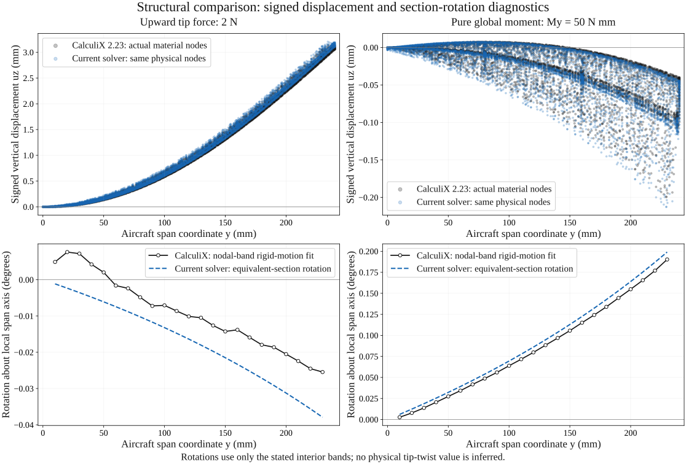
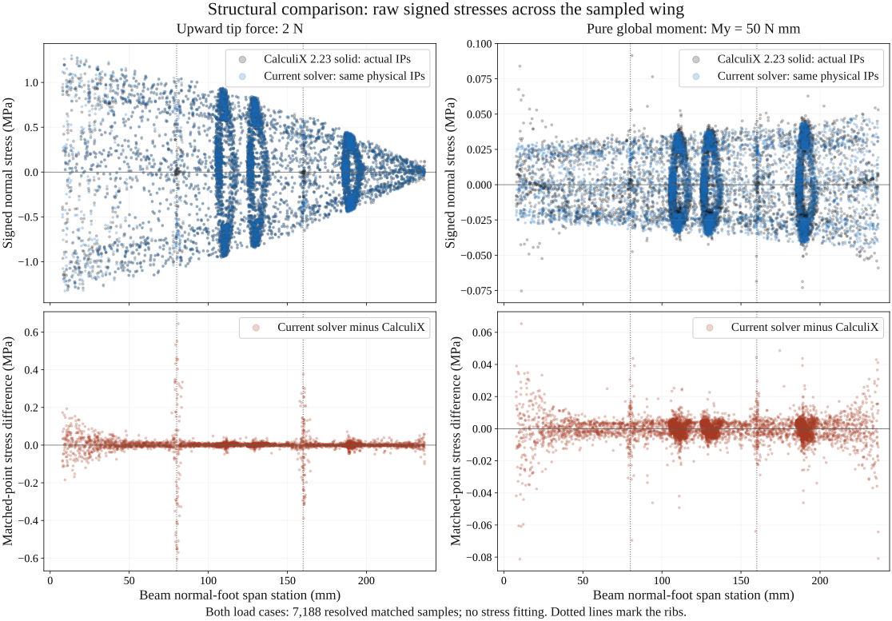

Structural validation
Independent comparison of the fast spatial-beam model with a three-dimensional CalculiX solid model.
Case-specific numerical evidence. Global deformation agrees closely for this benchmark. Local normal stress differs substantially under the torque load and near ribs, the clamp and the tip. This is not experimental validation, a failure prediction, or validation of every wing.
CalculiX fine solid mesh: 3.15495 mm
CalculiX fine solid mesh: 0.00370475 rad
The first response is the traction-weighted mean vertical tip displacement. The second is external work divided by the applied moment, W/My: a work-conjugate generalized rotation, not a measured or fitted physical tip twist. Global My also produces bending in the swept beam's local frame.
Matched geometry, material and loads
| Wing | Semi-span 240 mm; root/tip chords 60/48 mm; NACA 23018 → NACA 0018. |
|---|---|
| Orientation | Sweep 12° at quarter chord; dihedral 6°; root/tip incidence +2°/−2° at quarter chord. |
| Structure | Skin 1.2 mm; ribs 1.6 mm at y = 80 and 160 mm; end caps 2 mm. One bonded spar at x/c = 0.35, upper/lower cap width 4 mm, cap thickness 0.8 mm, web thickness 0.6 mm. |
| Material | Homogeneous isotropic linear elasticity: E = 2,000 MPa, ν = 0.35. No self-weight. These are teaching inputs, not measured printed-PLA properties. |
| Boundary condition | Solid: all three translations fixed on the actual root material face. Beam: six degrees of freedom fixed on its equivalent root axis. The different local restraint models remain part of the comparison. |
| Loads | Case 1: uniform upward traction over the actual tip material face, total 2 N. Case 2: chordwise-varying vertical tip traction, zero net force and My = 50 N mm. The beam receives each load's same global resultant force and moment. |
| Independent solver | CalculiX 2.23, C3D10 quadratic tetrahedra. Coarse/fine meshes: 16,648 / 24,112 elements and 31,630 / 45,790 nodes. Gmsh 4.15.2 meshes preserve the CAD geometry. |
| Beam mesh | 15 section samples; 40/80 requested elements become 54/94 actual elements after geometry and load stations are inserted. The reported response uses 94 elements. |
CalculiX was executed on 26 October 2026. The current production beam was re-run on the same benchmark: both responses and all 7,188 resolved matched stress values in each fine-mesh case reproduce the archived beam values exactly. The independent solid calculations are retained from the original run; they have not been relabelled as new runs.
Signed displacement and rotation


The lower plots compare the beam's local span-axis rotation with an unweighted rigid-motion fit to CalculiX displacements in interior aircraft-y bands ±0.75 mm wide. The fit solves u ≈ d + ω × (p − r); the plotted value is ω projected along the local beam axis. Each actual band, node count and fitting residual is in the force / moment CSV. These fits are diagnostics, not area-weighted exact cut rotations, pure torsion, or physical tip twist. No values are extrapolated to the endpoints.
Rotation agreement is weaker than global work agreement. In the force case, the two rotation diagnostics even have different signs near the root. The 2.100% work/My result must not be read as a 2.100% error bound on the physical twist profile.
Signed stress across the wing


The comparison uses σss = sᵀσs from the full CalculiX stress tensor. It compares this with the beam's nominal axial-plus-bending normal stress. It does not compare the full stress tensor, von Mises stress, or a certified maximum stress.
| Fine-mesh sampled region | Force case: relative RMS difference | Torque case: relative RMS difference |
|---|---|---|
| Interior, 20–220 mm, excluding within 3 mm of ribs | 3.603% | 24.063% |
| Root region, 0–20 mm | 9.170% | 91.011% |
| Within 3 mm of either rib | 23.488% | 33.790% |
| Tip region, 220–240 mm | 13.940% | 46.395% |
Relative RMS difference = √[Σw(σbeam − σsolid)² / Σwσsolid²], using actual integration-point volume weights. Region statistics use the original full-span subsample, without enriching the quiet interior bands. They are sampled volume-region norms, not complete cross-section cuts or pointwise percentage errors.
Refinement and sample coverage
Coarse-to-fine CalculiX global response changes are 0.185% under force and 0.428% under moment. Beam 54→94-element changes are 0.00603% and 0.00173%. Two mesh levels are a sensitivity check, not a guaranteed error bound or proof of local peak convergence.
The fine solid has 96,448 integration points. The predetermined comparison selects 7,395; 7,188 have supported beam normal-foot locations and 207 remain unresolved near the boundary. The resolved range is approximately y = 7.77–236.73 mm. These are not exact root/tip stress values. Both resolved and unresolved records are retained in the CSV files.
Sampling includes all integration points in the declared y = 110/130/190 ± 2 mm bands and one rotating integration point from every eighth element across the full wing. The meshes have different point sets; sampled band RMS changes must not be called same-point local convergence.
Independent stress–strain energy integration agrees with half the external work to about 9 × 10⁻¹⁰ relative using printed solver precision. This checks the result adapter and integration; it does not establish physical model accuracy.
What this supports
This benchmark supports using the fast beam for global deformation and nominal bending trends in the matched finite-tip wing. It also demonstrates why local stresses near attachments and under torque need caution: warping, cross-section distortion, finite rib stiffness, clamp effects and detailed load introduction are not resolved by its nominal beam field.
Exact zero-chord delta/elliptical tips, printed anisotropy, mixed materials, adhesive failure, buckling, fracture, shell/solid analysis inside the browser, and general full-wing local stress accuracy are not validated by this benchmark. The original complete-cut stress gate was not established; no overall validation pass is declared.
Data and reproduction
Wing study JSONCurrent beam responses and loadsForce-case matched stressMoment-case matched stressForce-case matched displacementMoment-case matched displacementNumerical summary and source hashesCalculiX decks, raw outputs and source package
The package includes all four input decks, original stress/displacement output, solver logs, CAD, mesh-admission records and comparison scripts. Run an input deck with ccx_static -i ccx-h5-uniform (omit the .inp suffix). Its source/ directory includes the beam-reference helper and matched-point comparison; the package README explains their repository placement and dependencies. No reference stress values are supplied as targets to the beam solver.
The publication check evaluates the exact WingEngine block embedded in Wing AeroStruct, rather than assuming its older shared beam helper is identical. The editable source mapping, embedded-block hash and execution details are in the numerical record.
Published-engine response recheck runs with Node: node check-current.cjs REPOSITORY EXTRACTED_BENCHMARK OUTPUT_JSON. It executes the exact shipped engine and checks the two global response cases; it does not rerun CalculiX or turn the local-stress diagnostics into an accuracy pass.
Figure-generation source replots the published CSV samples with NumPy and Matplotlib.
Independent software sources: CalculiX — official solver and source · CalculiX 2.23 Windows release · Gmsh documentation.